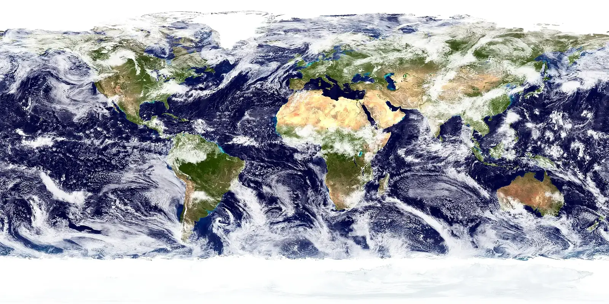

This Space Map is a draft. It shows satellite solutions already on Saving Planets. It will grow, and it is not in the main menu yet.
Space Map
Tap a satellite to open its solution card. Low, sun-synchronous, medium, and geostationary orbits are drawn to scale with Earth. A gold ≈ means the place is approximate.
Loading the globe…
Earth image: NASA Goddard Space Flight Center, Blue Marble. Public domain. Source


Motion is turned off. The table below lists the same satellites, with links to their solution pages.
Drag to turn Earth. Scroll or pinch to zoom. Tap a picture to open that solution.
Orbits near Earth are to scale. L1, L2, and L5 are not: those spacecraft are about 1.5 million kilometers away, dozens of times farther than geostationary orbit.
Satellites on this map
The same satellites as the globe, for keyboards and screen readers. Where a page covers a whole fleet, one satellite stands in for it. The card says which one.
| Satellite | Orbit | How it is placed | Picture |
|---|---|---|---|
| Landsat 9 | Sun-synchronous orbit | CelesTrak TLE, NORAD 49260 | Photo. |
| Sentinel-2C | Sun-synchronous orbit | CelesTrak TLE, NORAD 60989 | Photo. |
| Sentinel-1C | Sun-synchronous orbit | CelesTrak TLE, NORAD 62261 | Photo. |
| Sentinel-3B | Sun-synchronous orbit | CelesTrak TLE, NORAD 43437 | Official rendering. |
| Sentinel-5P | Sun-synchronous orbit | CelesTrak TLE, NORAD 42969 | Official rendering. |
| Sentinel-6B | Low Earth orbit | CelesTrak TLE, NORAD 66514 | Photo. |
| OCO-2 | Sun-synchronous orbit | CelesTrak TLE, NORAD 40059 | Official rendering. |
| SMAP | Sun-synchronous orbit | CelesTrak TLE, NORAD 40376 | Official rendering. |
| PACE | Sun-synchronous orbit | CelesTrak TLE, NORAD 58928 | Photo. |
| SWOT | Low Earth orbit | CelesTrak TLE, NORAD 54754 | Photo. |
| ICESat-2 | Low Earth orbit | CelesTrak TLE, NORAD 43613 | Official rendering. |
| GRACE-FO | Low Earth orbit | CelesTrak TLE, NORAD 43476 | Official rendering. |
| NISAR | Sun-synchronous orbit | CelesTrak TLE, NORAD 65053 | Photo. |
| EarthCARE | Sun-synchronous orbit | CelesTrak TLE, NORAD 59908 | Photo. |
| NOAA-21 | Sun-synchronous orbit | CelesTrak TLE, NORAD 54234 | Photo. |
| GCOM-W | Sun-synchronous orbit | CelesTrak TLE, NORAD 38337 | Official rendering. |
| GOSAT-GW | Sun-synchronous orbit | CelesTrak TLE, NORAD 64694 | Official rendering. |
| EOS-06 | Sun-synchronous orbit | CelesTrak TLE, NORAD 54361 | Photo. |
| ALOS-4 | Sun-synchronous orbit | CelesTrak TLE, NORAD 60182 | Photo. |
| Biomass | Sun-synchronous orbit | CelesTrak TLE, NORAD 63772 | Photo. |
| Tanager-1 | Sun-synchronous orbit | CelesTrak TLE, NORAD 60507 | Photo. |
| CryoSat-2 | Low Earth orbit | CelesTrak TLE, NORAD 36508 | Official rendering. |
| Arctic Weather Satellite | Sun-synchronous orbit | CelesTrak TLE, NORAD 60543 | Official rendering. |
| SCISAT | Low Earth orbit | CelesTrak TLE, NORAD 27858 | Photo. |
| PREFIRE-1 | Sun-synchronous orbit | CelesTrak TLE, NORAD 59965 | Photo. |
| ADRAS-J | Sun-synchronous orbit | CelesTrak TLE, NORAD 58992 | Official rendering. |
| PUNCH | Sun-synchronous orbit | CelesTrak TLE, NORAD 63178 | Photo. |
| TRACERS 1 | Sun-synchronous orbit | CelesTrak TLE, NORAD 64870 | Photo. |
| HydroGNSS-1 | Sun-synchronous orbit | CelesTrak TLE, NORAD 66762 | Official rendering. |
| EMIT on the ISS | Low Earth orbit | CelesTrak TLE, NORAD 25544 | Photo. |
| Galileo 23 | Medium Earth orbit | CelesTrak TLE, NORAD 43566 | Photo. |
| GOES-19 | Geostationary orbit | CelesTrak TLE, NORAD 60133 | Photo. |
| INSAT-3DS | Geostationary orbit | CelesTrak TLE, NORAD 58990 | Photo. |
| MTG-I1 | Geostationary orbit | CelesTrak TLE, NORAD 54743 | Photo. |
| Sentinel-4 on MTG-S1 | Geostationary orbit | CelesTrak TLE, NORAD 64723 | Photo. |
| MEV-2 | Geostationary orbit | CelesTrak TLE, NORAD 46113 | Official rendering. |
| MetOp-SG-A1 | Sun-synchronous orbit | CelesTrak TLE, NORAD 65159 | Photo. |
| Aeolus | Sun-synchronous orbit | Approximate — see the card | Photo. |
| DSCOVR | Sun–Earth L1 | Approximate — see the card | Official rendering. |
| Aditya-L1 | Sun–Earth L1 | Approximate — see the card | Photo. |
| SOHO | Sun–Earth L1 | Approximate — see the card | Photo. |
| IMAP | Sun–Earth L1 | Approximate — see the card | Photo. |
| Carruthers | Sun–Earth L1 | Approximate — see the card | Photo. |
| James Webb | Sun–Earth L2 | Approximate — see the card | Photo. |
| NEO Surveyor | Sun–Earth L1 | Approximate — see the card | Photo. |
| GeoXO | Geostationary orbit | Approximate — see the card | Official rendering. |
| LignoSat | Low Earth orbit | Approximate — see the card | Photo. |
| Starfish Otter | Low Earth orbit | Approximate — see the card | Official rendering. |